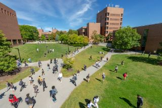

I am a sophomore at Rochester Institute of Technology (RIT) and I am in the Computing and Information Technology program. I anticipate graduating in May, 2023.
A few of the core courses completed or in progress are Web and Mobile I, Routing and Switching, Java I and II, Information Assurance and Security, Computer Systems Concepts, Computer Science I, and Software Engineering Seminar. I am also in the RIT Car Club.
I attended Baker High School in Baldwinsville NY. I graduated in June of 2019 with a 94 GPA. I participated in JV and Varsity Volleyball as well as track. I also participated in the National Honor Society.
RIT is the first Information Technology program in the United States. RIT ranks amongst the top 50 computing colleges according to Business Insider. The focus of RIT's students is to solve real world human centered problems. RIT's creative and innovative scholastics shape the future to improve the world.